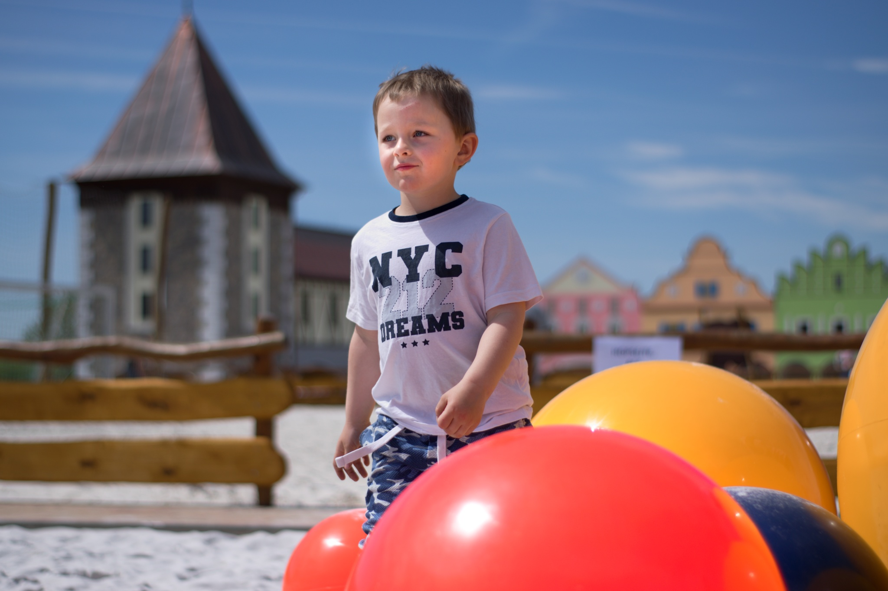
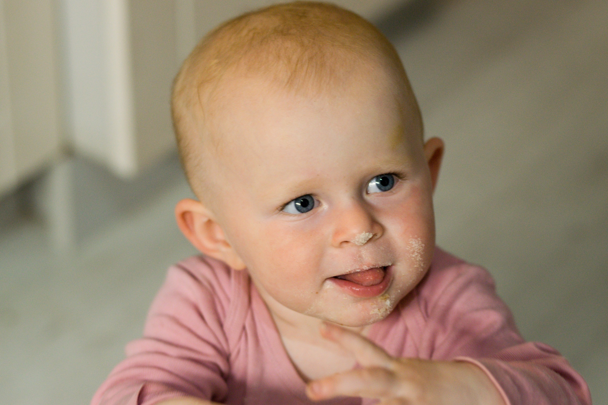

O mně
Je mi 36 let a bydlím na vesnici. Vyhovuje mi to, protože jsem založením spíše introvert a život ve městě by byl pro mně trestem.
Mám totiž ráda přírodu a snažím se s ní žít co nejvíce v souladu. Chvíli jsem si vyzkoušela, jaké je bydlet v bytě a přesvědčilo mě to o tom,
že mým snem je být více v přírodě. Koupili jsme tedy s manželem malý rodinný domek, který jsme si svépomocí zrekonstruovali.
Do domku postupně přibyli dvě děti - Mája a Davda a také dva pejsci - Lišána a Arynka.




Pracovní zkušenosti
Tento rok jsem oslavila 10 let ve společnosti ČSOB. Jsem zde maximálně spokojená, nabízí totiž řadu benefitů a jedním z nich
byl i tento kurz, který mi celý zaplatili.
Postupně jsme vystřídala několik pozic. V současné chvíli pracuji jako interní
lektor na poloviční úvazek. Jsem totiž na rodičovské dovolené. Příští rok se ale vrátím zpět na plný úvazek. Přimělo mě to zamyslet
se nad tím, jestli mě lektorování stále naplňuje.
Pozice, kterými jsem prošla
- Interní lektor
- Specialista pro korporátní klientelu
- Pracovník pro Helpdesk Elektronického bankovnictví
- Klientský pracovník Servisní útvar
- Klientský pracovník Telesales
Znalosti a dovednosti
Jsem technicky zdatná, tedy vždy nějakým způsobem byla moji náplní práce na počítači. Můj manžel rád říkává, že jsem nikdy nedělala
rukama a častuje mě tím, že bych si to měla zkusit 😀. Jak jste se již dočetli, v současné chvíli jsem interním lektorem na půl úvazku,
avšak teď neškolím, ale připravuji školící materiály. Konkrétně nyní pracuji na animovaných vzdělávacích videích v aplikaci Vyond.
To mě teď velice naplňuje a baví.
Mým snem vždy bylo naučit se tvořit web, tak jsem se v prosinci loňského roku rozhodla, že se do toho konečně pustím a jako samouk
jsem se začala učit s Wordpress a postavila jsem pár webů pro známe na Elementoru. Narazila jsem ale na limity a rozhodla se,
že se naučit HTML + CSS.
Co ovládám
- Windows, Office
- Základní znalost Wordpress
- Elementor
- Vyond
- Anglický jazyk na pokročilé úrovni
- Mnoho dalšího

Zájmy
Jak jsem již psala, mám ráda přírodu. Zajímám se o netoxický život, zdravé stravování. Pravidelně cvičím jógu a medituji.
Miluji procházky lesem a již třetím rokem se otužuji. Opět díky ČSOB jsem se mohla zúčastnit kurzu Wim Hof metody,
kdy jsem si vyzkoušela opravdu ledovou vodu. Na fotce můžete kromě ledu vidět I krásný výhled z naší nové budovy v Hradci Králové.